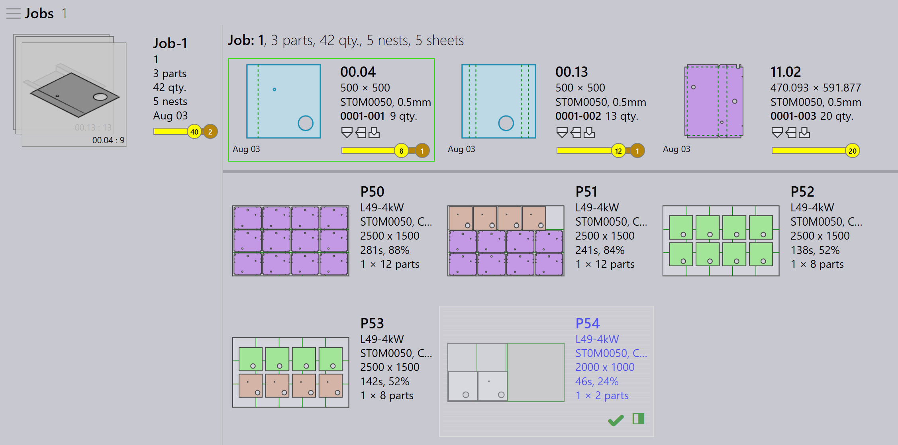

Auto remnant management
残材の有効化
TruSmartCAM は、ネスティング中のレイアウトからの自動残材シート作成をサポートします。この機能は TecZone Laser マシンでのみ利用できます。
-
factory → Machines → Machine Defaults → Skeleton cuts をクリックします。
-
この機能を有効にするには、Slice Sheet Skeleton と Create Remainder Sheet オプションを選択します。
有効にすると、ネストされたシートの残りの領域は、X と Y に割り当てられた Minimum Remainder Sheet Value に基づいて、残りシートにスライスされます。

自動残材の構成
-
factory → Settings → Job をクリックします。
-
Update sheet inventory on nest (un)release と Automate remnant inventory management を選択します。

自動残材
部品をネスティングするとき、残りのシート領域が Minimum Sheet Value X と Y を満たす場合、TruSmartCAM は残りのスペースから Remnant Sheet を自動的に作成します。
-
Job Nest ビューでは、残材シートを持つネストは、緑の枠線とグレーの背景で表示されます。

-
ネストをダブルクリックして Nest Detail ページを開きます。残材シート情報は、残材シートのサイズ、数量、面積とともに表示されます。
-
ネストを右クリックして Edit を選択し、TecZone で開きます。ネストには、部品間のスライス線と skeleton スライス線が、残材の寸法の刻印とともに表示されます。（Material、Thickness、Remnant Size）
残材の寸法の刻印マークは、オペレーターが測定せずにシートを選択するのに役立ち、今後のネストで使用しやすくなります。
Mark Complete をクリックすると、残材シートは緑のチェックマークとともに表示され、ネストが完了したことを示します。部分的に着色された四角アイコンは、残材シートが作成され、シート在庫で更新されたことを示します。

シートデータベースは、残材シートのサイズと数量で更新され、シートサイズの末尾にアスタリスク（*）記号で識別されます。残材シートには緑の枠があります。

ジョブの Auto plan または interactive plan は、ネスト計画で残材シートを高優先度として考慮し、ショップフロアを未使用の残材がない状態に保つために最初に使用されるようにします。